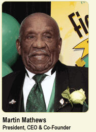

Martin L. Mathews
President & Co-Founder
 For more than 48 years, Martin L. Mathews has dedicated his life to community service. A champion for youth, Mathews has forged relationships with business and community leaders, and developed innovative programs for thousands of young people. Like Martin Luther King, Jr., Mathews believes in equal rights for all and that everyone should work together - regardless of race, creed or color - to achieve a safe, productive America. In 1960, Mathews co-founded the Mathews-Dickey Boys' Club under a shade tree in St. Louis' Handy Park.
A former coach of the Mathews-Dickey Knights, Mathews led his team of 30 young men to victories on the baseball fields and in their schools and communities. Today, he is the full-time President & CEO of the Club, which annually serves more than 40,000 young men and women from the St. Louis-metropolitan area. Thousands of successful alumni have graduated from the Club's programs. In 2001, the Mathews-Dickey Boys' Club official became the Mathews-Dickey Boys' & Girls' Club. Mathews led a Millennial Fund-raising Campaign to preserve the Girls' Program for generations of young women to come by raising $1.5 million over three years. In 2006, he successfully guided the Club to matching a $1 million challenge from Enterprise Rent-A-Car Co-Founder Jack Taylor to enable more than $2 million in restoration efforts to the Clubís Kingshighway main, Union athletic and stadium facilities. Mathews also led a successful $1 Million Operational Reserve Campaign in 2007, dedicated in memory of Hall of Fame Broadcaster Jack Buck, that was bolstered by gifts of $500,000 by Edward Jones and $300,000 by the Orthwein Foundation.
A sportsman and humanitarian, Mathews influenced National League Baseball Commissioner Leonard Coleman to establish a national day in honor of Mathews' childhood hero, Jackie Robinson. This program has heightened awareness of the Reviving Baseball in the Inner-Cities (RBI) Program, and enabled more young men and women to participate in the sport - both in the United States and overseas. Mathews is the founder of the "Earn and Learn" Program, a training effort that allows young people to earn money as managers, coaches, scorekeepers and umpires.
A guest of the Federal Bureau of Investigation (FBI) in Quanico, Va. and several other major inner cities, Mathews founded the Mathews-Dickey Motivation, Vocation and Preparation (MVP) program to address gang violence. St. Louis is the only major inner-city in the nation that is riot-free - the result of programs like Mathews-Dickey.
 In 1982, the Club was declared a model for the country by President Ronald Reagan. Its successful programs were recognized by the NBC Today Show in the summer of 1994, and Vice President Dan Quayle and Supreme Court Justice Clarence Thomas also visited the Club to applaud the St. Louis Internship Program - which now operates in 36 cities. The Club was also featured in Anheuser-Busch's nationally aired commercial, which promotes the Club's "Three R" concept - “respect, restraint and responsibility.” Mathews-Dickey also was declared a 21st Century Learning Center by the White House.
In 1982, the Club was declared a model for the country by President Ronald Reagan. Its successful programs were recognized by the NBC Today Show in the summer of 1994, and Vice President Dan Quayle and Supreme Court Justice Clarence Thomas also visited the Club to applaud the St. Louis Internship Program - which now operates in 36 cities. The Club was also featured in Anheuser-Busch's nationally aired commercial, which promotes the Club's "Three R" concept - “respect, restraint and responsibility.” Mathews-Dickey also was declared a 21st Century Learning Center by the White House.
Mathews has received numerous local and national awards, including: the Amateur Baseball Hall of Fame; President's Council on Youth Opportunity; St. Louis Board of Education's Outstanding Community Service; the Washington Times' National Service and American Century; National President's Award of Excellence from Delta Sigma Theta, Inc.; the Missouri Athletic Club's prestigious Jack Buck Award and an honorary doctorate from Webster University. In 1975, the St. Louis Globe Democrat bestowed its Humanitarian Award upon Mathews, and he was honored with the United States Presidential Citizens Award by President Ronald Reagan in 1982.
Mathews serves on the boards of the Missouri Athletic Club (MAC) Foundation and Baseball Collegiate League. A founding member of the Jackie Joyner-Kersee Community Board, he helped launch a multi-million-dollar fund-raising drive to build a youth facility for the young men and women of East St. Louis, Ill. He is a member of the Cote Brilliante Presbyterian Church. Mathews continues to work successfully with individuals from diverse ethnic and professional backgrounds to improve race relations and community partnerships in our society.
Mathews is available for speaking engagements for civic, corporate and non-profit events. For information, call Barbara Washington at (314) 382-5952, ext. 234.